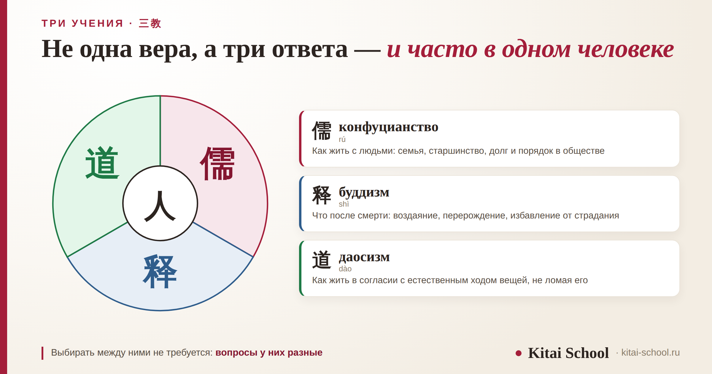
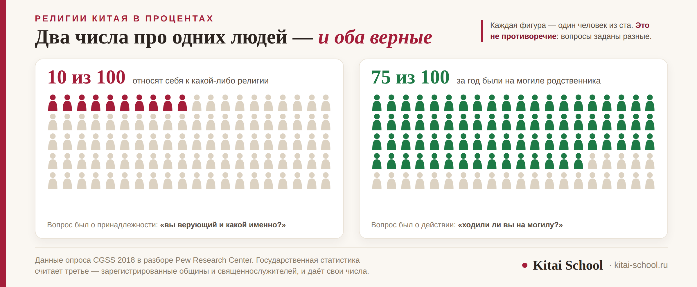

Культура Китая
Какая религия в Китае: конфуцианство, буддизм, даосизм и понятие «трёх учений»


У вопроса «какая религия в Китае» нет однословного ответа, и дело не в недостатке сведений. Религиозность здесь устроена иначе: государственной религии нет, к какой-либо себя относит примерно каждый десятый взрослый — и при этом три четверти хотя бы раз за год были на могиле родственника. Разберём пять официально признанных религий, рамку «трёх учений» 三教, роль культа предков и то, почему китайскую духовность точнее описывать как мировоззрение, а не как церковь.
Государственной религии в Китае нет, свобода вероисповедания закреплена Конституцией. Официально признаны пять религий: буддизм, даосизм, ислам, католицизм, протестантизм — конфуцианства среди них нет. Рамка «трёх учений» допускает, что один человек живёт по конфуцианской этике, обращается в буддийский храм и празднует по лунному календарю. Культ предков 祭祖 распространён шире любой отдельной религии и верующим себя при этом никто не называет.
Короткий ответ: одной религии нет
Начать стоит с того, чего в Китае нет. Государственной религии не существует: статья 36 Конституции 1982 года закрепляет свободу вероисповедания и прямо запрещает принуждать человека верить или не верить, а также дискриминировать его по этому признаку.
Второе: большинство жителей не относит себя ни к какой религии. Это не означает, что они ничего не делают. Тот же человек, который на вопрос о вере ответит «я неверующий», на Цинмин поедет убирать могилу деда, а перед экзаменом ребёнка сходит в храм.
Главное, что мешает иностранцу понять картину: мы по привычке ищем принадлежность — к какой церкви относится человек. В Китае устойчивее другое — набор действий и представлений, который не требует членства нигде.
Пять религий, которые признаны официально
Государство ведёт учёт религиозных организаций, и признанных религий ровно пять.
| Религия | По-китайски | Что известно о числе |
|---|---|---|
| Буддизм | 佛教 fójiào | около 222 тысяч священнослужителей; число верующих не оценивается |
| Даосизм | 道教 dàojiào | свыше 40 тысяч священнослужителей; то же |
| Ислам | 伊斯兰教 yīsīlánjiào | десять народов, преимущественно исповедующих ислам, — свыше 20 млн человек |
| Католицизм | 天主教 tiānzhǔjiào | около 6 млн верующих |
| Протестантизм | 基督教 jīdūjiào | около 38 млн верующих |
Одно пояснение по словам. 基督教 буквально значит «христианство», но в материковом употреблении этим словом называют именно протестантизм, а католицизм — отдельным словом 天主教. Если нужно сказать «христианство вообще», говорят 基督宗教.
Всего Белая книга Госсовета 2018 года называет около 200 млн верующих и свыше 380 тысяч священнослужителей. Конфуцианства в списке нет, и это не упущение — почему так, разберём отдельно.
Религии Китая в процентах: почему чисел три набора
Это самый частый вопрос — и место, где тексты в интернете расходятся сильнее всего. Причина простая: считают разное.
Первый набор — государственный учёт. Это числа из таблицы выше: зарегистрированные общины, священнослужители, места богослужения. Про буддистов и даосов Белая книга прямо говорит, что точно оценить их количество нельзя — у рядовых верующих нет процедуры регистрации. В храм можно ходить всю жизнь, нигде не числясь.
Второй набор — опросы о принадлежности. Когда людей прямо спрашивают, верующие ли они и кто именно, к какой-либо религии себя относит примерно каждый десятый взрослый.
Третий набор — опросы о действиях. Если спрашивать не «кто вы», а «что вы делали», картина меняется: три четверти взрослых за прошедший год хотя бы раз были на могиле родственника.
Складывать эти наборы между собой нельзя: они считают разные вещи и получены разными способами. Когда в статье вам обещают «точный процент верующих в Китае», стоит посмотреть, о чём именно спрашивали.

«Три учения»: 三教
Рамка, в которой всё это умещается, называется 三教 (sānjiào) — «три учения». Это конфуцианство, буддизм и даосизм.
Главное в ней то, что учения не исключают друг друга. Формула 三教合一 (sānjiào héyī), «три учения едины», складывается примерно к эпохам Сун и Мин и означает, что между ними нет выбора «или — или».
| Учение | Знак | На какой вопрос отвечает |
|---|---|---|
| Конфуцианство | 儒 rú | как жить с людьми: семья, старшинство, долг, порядок в обществе |
| Буддизм | 释 shì | что после смерти: воздаяние, перерождение, избавление от страдания |
| Даосизм | 道 dào | как жить в согласии с естественным ходом вещей |
Вопросы у них разные, поэтому и выбирать между ними не требуется. Человек может воспитывать детей по конфуцианским представлениям о долге, в трудную минуту пойти в буддийский храм и при этом считать, что здоровье зависит от равновесия в теле, — это даосская идея.
Важно не перепутать это с безразличием. Каждое учение остаётся отдельным: у буддизма и даосизма свои канонические тексты, свои служители и свои храмы, которые не смешиваются. Монах буддийского монастыря и даосский наставник — разные люди с разной подготовкой, и перепутать их на месте сложно: отличаются и одежда, и устройство двора, и то, кому поставлены фигуры в залах.
Рамка «трёх учений» описывает не слияние традиций в одну, а то, что человек не обязан выбирать одну-единственную. Это разные вещи, и первая путаница у иностранца возникает именно здесь.
Учащийся готовился к поездке и на занятии спросил, как по-китайски вежливо узнать у коллеги, какой он веры. Я предложила сначала подумать, зачем ему это.
Через месяц он написал из Ханчжоу. Вопрос он всё-таки задал — за ужином, из лучших побуждений. Коллега ответил: «Я неверующий». А через два дня позвал его с собой в храм ставить благовония за здоровье матери.
Мой учащийся решил, что его обманули, и спросил об этом прямо. Выяснилось, что никакого противоречия в этом никто не видел: «верующий» для его собеседника означало принадлежность к общине, а поход в храм — обычное дело.
С тех пор я советую заменять вопрос. Не «какая у вас религия», а «а какие у вас дома праздники отмечают» — на него отвечают охотно и рассказывают гораздо больше.
Конфуцианство — религия или нет
Вопрос не праздный, и однозначного ответа у него нет. Среди пяти официально признанных религий конфуцианства нет, и это не случайность: в нём отсутствует то, что обычно считают признаками религии — учение о божестве-творце, спасении души, загробной участи.
Зато есть другое: ритуал, почитание предков, тексты, которым следуют, и фигура Учителя. Поэтому в одних классификациях конфуцианство называют этико-философской системой, в других — религией.
Для читателя практический вывод такой: в рамке «трёх учений» конфуцианство стоит на своём месте, а в списке религиозных организаций его нет. Оба утверждения верны одновременно. Как конфуцианские представления работают в повседневном общении — в разборе китайского этикета общения.
Культ предков: то, что делают почти все
祭祖 (jìzǔ) — почитание предков. Это то, что объединяет людей самых разных взглядов.
Главный день — 清明节 (Qīngmíngjié), Цинмин, он же День поминовения. В этот день ездят на кладбище, приводят в порядок могилу, приносят еду и цветы. Отсюда и те самые три четверти из опроса.
Важная оговорка: участие в этом не делает человека верующим — и сам он себя так не назовёт. Для многих это семейная обязанность и память, а не обряд. Поэтому вопрос «вы верите в загробную жизнь?» и вопрос «вы ездите на Цинмин?» дают разные ответы от одного и того же человека.
Рядом с «тремя учениями» существует и 民间信仰 (mínjiān xìnyǎng) — народные верования: местные божества, покровители ремёсел и городов, приметы и представления об удаче. Часть из них видна в бытовых мелочах — например, в отношении к числам, о котором мы писали в разборе иероглифа «четыре», или к цветам: значение цветов в Китае.
Что это значит на практике
Несколько вещей, которые полезно знать путешественнику и тому, кто работает с китайскими партнёрами.
- Вопрос о вере не считается светской темой. Спрашивать «какая у вас религия» при знакомстве примерно так же уместно, как спрашивать о зарплате. Если тема возникнет сама, собеседник её поднимет.
- Храм — это и памятник, и действующее место. В одном и том же дворе люди фотографируются и люди молятся. Смотреть и ходить можно почти везде, снимать внутри залов — не всегда, об этом обычно есть табличка.
- Благовония у входа продаются не как сувенир. Если берёте их за компанию, повторяйте за теми, кто пришёл, и не фотографируйте людей за обрядом крупным планом.
- Цинмин — семейный день, а не праздник. Поздравлять с ним не нужно; это ближе к нашему родительскому дню.
- Удивление собеседник не примет за интерес. Фразы вроде «так вы ни во что не верите?» ставят собеседника в неловкое положение. Как в Китае устроен разговор и почему прямые вопросы здесь работают иначе — в разборе как общаются китайцы.
Мини-словарь: восемь терминов
| Термин | Чтение | Что значит |
|---|---|---|
| 宗教 | zōngjiào | религия как институт |
| 信仰 | xìnyǎng | вера, убеждения — шире, чем религия |
| 三教 | sānjiào | «три учения»: конфуцианство, буддизм, даосизм |
| 儒家 | rújiā | конфуцианская традиция |
| 佛教 | fójiào | буддизм |
| 道教 | dàojiào | даосизм |
| 祭祖 | jìzǔ | почитание предков |
| 民间信仰 | mínjiān xìnyǎng | народные верования |
Про культуру удобнее читать на языке оригинала: 三教, 祭祖, 信仰 — слова прозрачные, они разбираются по знакам. На занятиях мы так и работаем: от знака к смыслу, а не от списка слов к зубрёжке. Есть и отдельный курс иероглифики. Оставить заявку или написать в Telegram.
Частые вопросы (FAQ)
Какая религия в Китае основная?
Одной основной религии нет, и государственной тоже: статья 36 Конституции закрепляет свободу вероисповедания. Официально признаны пять религий — буддизм, даосизм, ислам, католицизм и протестантизм. При этом большинство жителей не относит себя ни к одной из них, а культурной рамкой служат «три учения» 三教: конфуцианство, буддизм и даосизм.
Какую религию исповедуют китайцы — и во что они верят?
Чаще всего человек не выбирает одну традицию. Рамка «трёх учений» это и допускает: 三教合一, «три учения едины». Один и тот же человек может воспитывать детей по конфуцианским представлениям о долге, в трудную минуту пойти в буддийский храм и считать, что здоровье зависит от равновесия в теле, — последнее идёт от даосизма.
Религии Китая в процентах — какие цифры верные?
Верных наборов три, и они отвечают на разные вопросы. Государственный учёт считает зарегистрированные общины и священнослужителей: около 200 млн верующих и свыше 380 тысяч служителей. Опросы о принадлежности дают примерно одного из десяти взрослых. Опросы о действиях — три четверти взрослых, побывавших за год на могиле родственника.
Конфуцианство — это религия?
Однозначного ответа нет. Среди пяти официально признанных религий конфуцианства нет, и это не упущение: в нём отсутствуют учение о божестве-творце, спасении души и загробной участи. Но есть ритуал, почитание предков, канонические тексты и фигура Учителя. Поэтому в одних классификациях его называют этико-философской системой, в других — религией.
Кому поклоняются китайцы и где они молятся?
Единого адресата нет. В буддийских храмах обращаются к буддам и бодхисаттвам, в даосских — к божествам даосского пантеона, в народных верованиях 民间信仰 — к местным покровителям и духам-хранителям ремёсел и городов. Отдельно стоит почитание предков 祭祖, которое происходит дома у семейного алтаря и на кладбище.
Что такое культ предков и Цинмин?
祭祖 (jìzǔ) — почитание предков, самая распространённая практика в стране. Главный день — 清明节, Цинмин, когда ездят на кладбище, приводят в порядок могилу и приносят еду и цветы. Участие в этом не делает человека верующим, и сам он себя так не назовёт: для многих это семейная обязанность и память, а не обряд.
Дальше по теме: китайский этикет общения; как общаются китайцы; значение цветов в Китае; жёлтый цвет в Китае; национальные цветы Китая; дни недели в Китае; и про знак, с которого начинается семья, — иероглиф «семья».
Источники
- Конституция КНР 1982 года, статья 36 — свобода вероисповедания и запрет принуждения и дискриминации по признаку отношения к религии.
- Белая книга Информационного управления Госсовета КНР «Политика и практика Китая по защите свободы вероисповедания» (2018): пять официально признанных религий; около 200 млн верующих и свыше 380 тысяч священнослужителей; около 6 млн католиков и около 38 млн протестантов; свыше 20 млн человек в десяти народах, преимущественно исповедующих ислам; около 222 тысяч буддийских и свыше 40 тысяч даосских священнослужителей. Там же — оговорка о невозможности точно оценить число буддистов и даосов.
- Данные опроса CGSS 2018 в разборе Pew Research Center (2023): доля взрослых, относящих себя к какой-либо религии, и доля посещавших могилу родственника в течение года.
- Справочные материалы по «трём учениям»: формула 三教合一 и её складывание к эпохам Сун и Мин; 祭祖 и Цинмин.
- Практика Kitai School — вопросы учащихся о культуре и о том, как говорить на эти темы по-китайски.
- Оговорка: статья описывает мировоззрение и бытовую сторону вопроса. Религиозная политика и её регулирование в предмет этого разбора не входят. Числа опросов зависят от формулировки вопроса, поэтому в статье они приведены вместе с тем, о чём именно спрашивали.
Пусть вопросы будут интересными, а ответы — неожиданными! 三教。